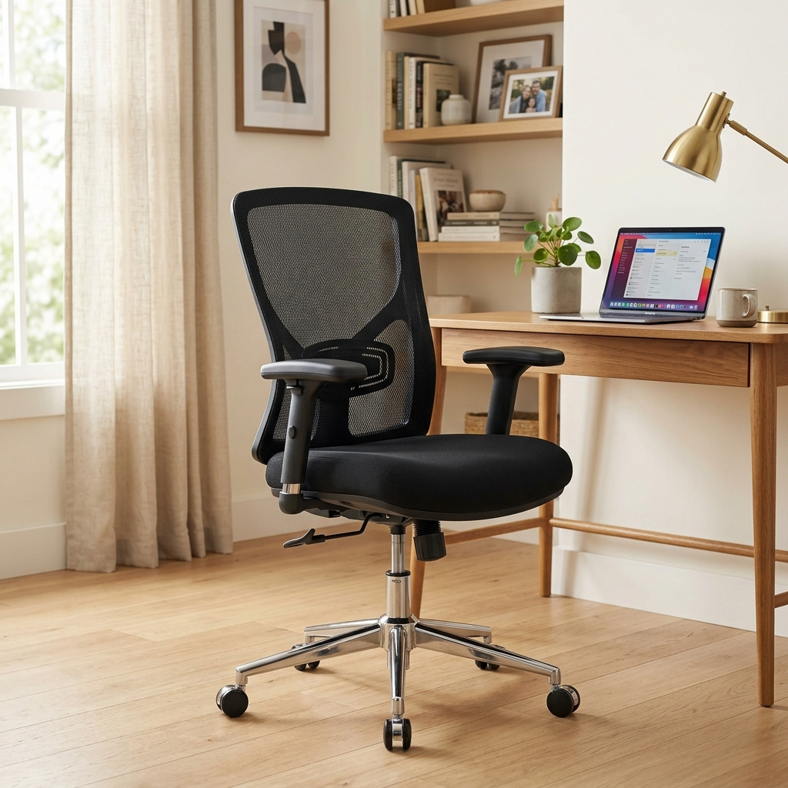

在宅勤務（リモートワーク）やフリーランスといった働き方が一般化する中、多くの人が毎日8〜10時間をパソコンの前で過ごしています。適切な椅子を使用せず、悪い姿勢のまま座り続けると、腰痛、肩こり、最終的には骨格の歪みといった健康被害がすぐに発生してしまいます。
最新のPCやゲームには何十万円も投資するのに、すでにクッションがへたってしまった普通のダイニングチェアや簡易的な折りたたみ椅子を使い続けている人が驚くほど多いのが現状です。これは非常に危険な優先順位です！身体を支えるシステム（つまりエルゴノミクスチェアと昇降デスク）への投資は、疲労の軽減と高い集中力を直接もたらします。
優れたオフィスチェア選びにおける3つの黄金原則
市場には「人間工学設計」を謳う椅子が数え切れないほどありますが、価格もピンキリです。本当に身体に良い椅子を見極めるには、以下の3つの機能に注目してください：
1. 調整可能なランバーサポート（腰当て）
脊椎のカーブは人によって異なります。良い椅子は、ランバーサポートの高さと奥行きを個別に調整でき、腰椎（S字カーブ）の適切な位置をしっかりと支え、猫背や腰の浮きを防ぎます。
2. 多次元可動アームレスト（3D / 4Dアームレスト）
タイピングやマウス操作時、腕が浮いた状態だと首や肩の筋肉が常に緊張します。アームレストはデスクと同じ高さに調整でき、肘を自然な90度に保てるものが理想です。
3. 通気性に優れたメッシュ素材
熱がこもりやすい革製や厚手のスポンジ製に比べ、オールメッシュ（Mesh）構造は夏場でも涼しく快適です。また、高品質なメッシュは体圧を適度に分散し、お尻や太ももの血行不良を防ぎます。

Sihoo M57 エルゴノミクスオフィスチェア
Amazonで非常に高い評価を獲得しているエルゴノミクスチェアの代表格。調整可能な2Dランバーサポート、3D可動アームレスト、通気性抜群のメッシュを搭載し、圧倒的なコスパを誇ります。
腰痛を防ぐ「正しい着座姿勢」のヒント
いくら高級な椅子を買っても、座り方が悪ければ効果は半減します。「3つの90度」を意識しましょう：
- 肘の角度を90度に： キーボードを打つ際、肩の力を抜きアームレストで前腕を支えます。
- 腰の角度を90度以上に： お尻を椅子の奥まで深く入れ、背もたれのランバーサポートに腰を密着させます。
- 膝の角度を90度に： 両足の裏がしっかりと床につくように座面の高さを調整します。足が浮く場合はフットレストを使いましょう。
まとめ：健康と生産性を手に入れよう
私たちの身体は一生使い続ける最大の資本です。2年で買い替えるスマートフォンとは違い、高品質なオフィスチェアは5〜10年にわたってあなたの健康をサポートします。今すぐAmazonであなたに合った椅子を選び、身体に優しい最適なワークスペースを構築しましょう！